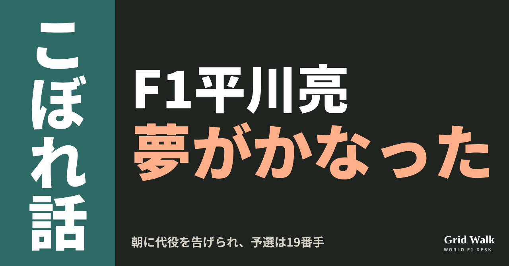
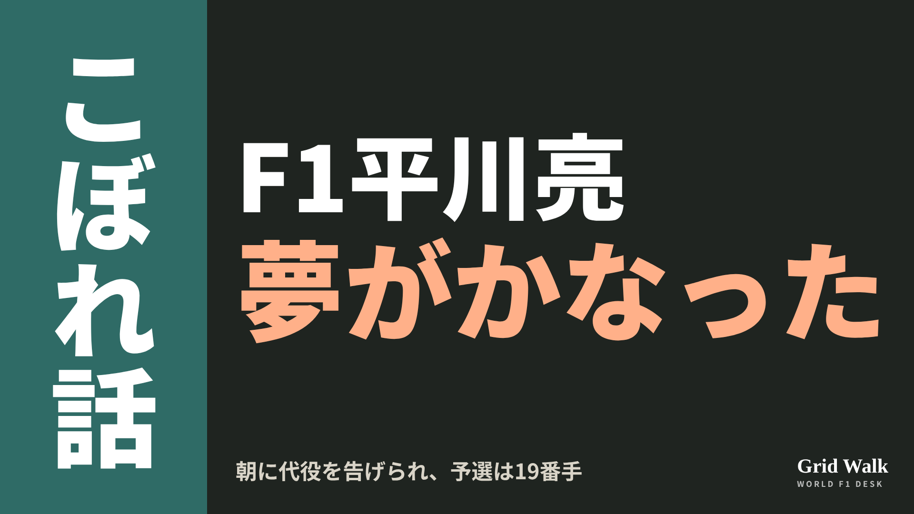
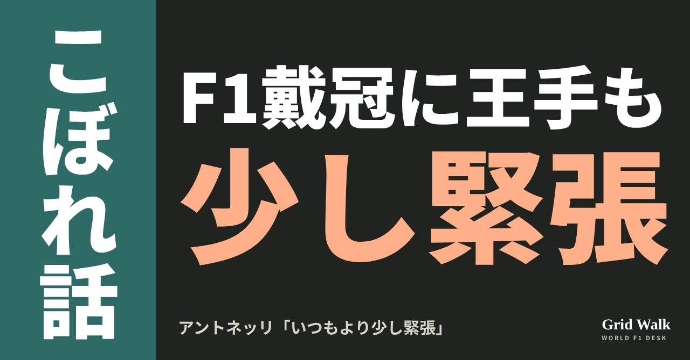
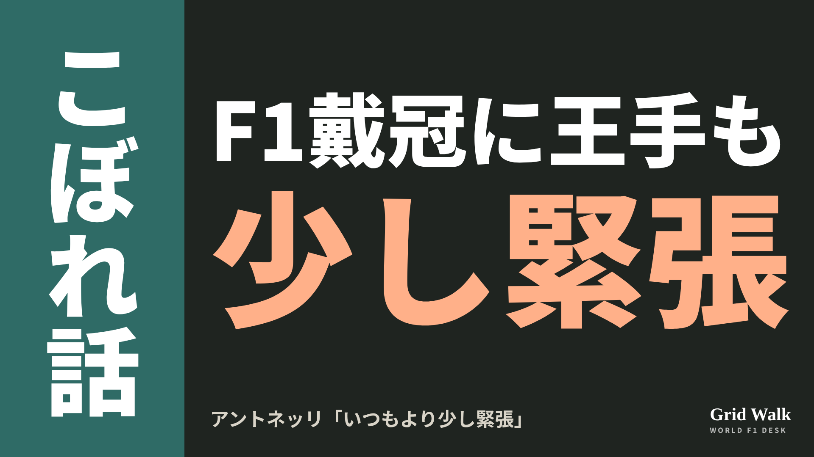
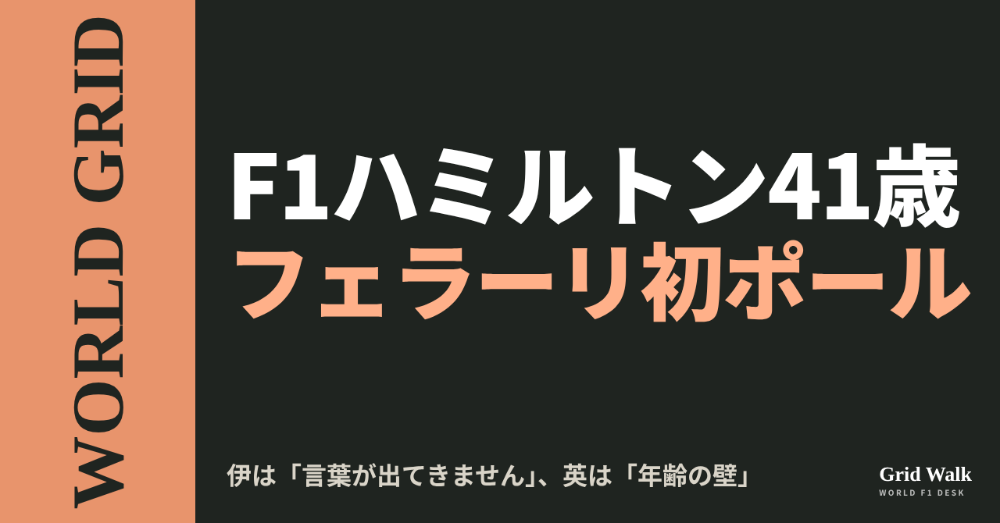
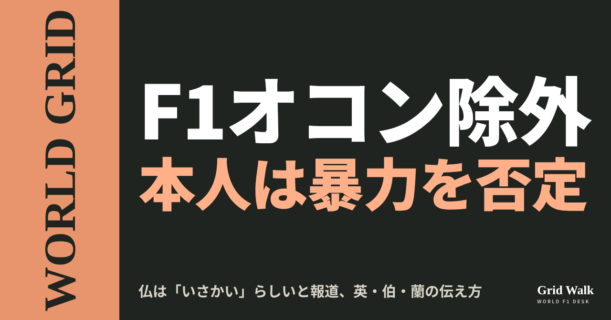
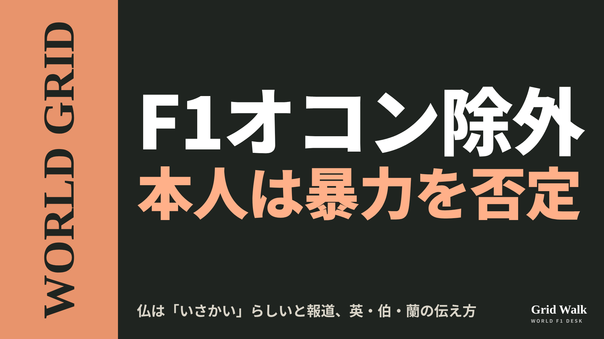

<meta charset="utf-8"><title>11/1夕方のコラム note貼り付け</title>
<style>
/* one column of numbered paste steps; text steps vs image steps differ by marker */
:root{--bg:#F5F4F0;--card:#FFFFFF;--ink:#1D2321;--mute:#5F665F;--line:#DCDAD2;--btn:#1F5FBF;--btnok:#2E8B4F;--img:#E9F3EC;--imgink:#22663B;--sans:'IBM Plex Sans JP','Hiragino Sans','Noto Sans JP',sans-serif}
@media (prefers-color-scheme:dark){:root:not([data-theme="light"]){--bg:#171A19;--card:#202423;--ink:#ECEDE8;--mute:#A3AAA2;--line:#343937;--btn:#4D8BE6;--btnok:#3FA866;--img:#1E2C23;--imgink:#8FD3A6;color-scheme:dark}}
:root[data-theme="dark"]{--bg:#171A19;--card:#202423;--ink:#ECEDE8;--mute:#A3AAA2;--line:#343937;--btn:#4D8BE6;--btnok:#3FA866;--img:#1E2C23;--imgink:#8FD3A6;color-scheme:dark}
body{background:var(--bg);color:var(--ink);font-family:var(--sans);font-size:15px;line-height:1.75;padding:20px 16px 60px}
main{max-width:680px;margin:0 auto;display:grid;gap:28px}
header h1{font-size:22px;margin:0 0 6px;text-wrap:balance}
header p{margin:0;color:var(--mute);font-size:14px}
nav{display:flex;gap:8px;flex-wrap:wrap;margin-top:12px}
nav a{border:1px solid var(--line);border-radius:999px;padding:4px 14px;color:var(--ink);text-decoration:none;font-size:14px;background:var(--card)}
.part h2{font-size:18px;line-height:1.5;margin:0 0 12px;text-wrap:balance;display:flex;gap:10px;align-items:baseline;flex-wrap:wrap}
.tag{font-size:13px;background:var(--ink);color:var(--bg);border-radius:6px;padding:1px 9px}
.steps{list-style:none;margin:0;padding:0;display:grid;gap:12px}
.st{background:var(--card);border:1px solid var(--line);border-radius:12px;padding:12px;min-width:0}
.hd{display:flex;align-items:center;gap:8px;margin-bottom:8px}
.no{width:26px;height:26px;border-radius:50%;background:var(--btn);color:#fff;display:inline-flex;align-items:center;justify-content:center;font-size:13px;font-weight:700;flex:0 0 26px}
.im .no{background:var(--btnok)}
.hd em{font-style:normal;font-size:12px;background:var(--img);color:var(--imgink);border-radius:6px;padding:0 8px}
.bx{font-size:13.5px;line-height:1.7;border:1px solid var(--line);border-radius:8px;padding:8px 10px;max-height:110px;overflow:auto;overflow-wrap:anywhere}
.bx.tall{max-height:150px}.bx p{margin:0 0 6px}.bx h2{font-size:14px;margin:8px 0 4px}.bx a{color:var(--btn)}
.st img{display:block;width:100%;max-width:100%;border:1px solid var(--line);border-radius:8px}
.sub{font-size:12.5px;color:var(--mute);margin:6px 0 0}
.cp{width:100%;margin-top:8px;padding:12px;border:0;border-radius:10px;background:var(--btn);color:#fff;font:600 15px var(--sans);cursor:pointer}
.cp.ok{background:var(--btnok)}.cp.dl{background:var(--btnok)}.cp:focus-visible{outline:3px solid var(--ink);outline-offset:2px}
.xh{font-size:15px;margin:20px 0 10px}
.fb{font-size:13px;line-height:1.7;margin:8px 0 0;padding:8px 10px;border-radius:8px;background:var(--img);color:var(--imgink)}
.opts{display:grid;grid-template-columns:repeat(auto-fill,minmax(240px,1fr));gap:10px}
.opt{min-width:0}.opt img{display:block;width:100%;border:1px solid var(--line);border-radius:8px}
.ol{display:flex;align-items:center;gap:8px;margin-top:6px}.ol b{font-size:13px;flex:0 0 auto}.ol .on{font-size:12.5px;color:var(--mute);flex:1;min-width:0}.ol .cp{width:auto;flex:0 0 auto;padding:9px 14px}.ol .cp{margin:0;padding:9px}
.toast{font-size:13px;color:var(--mute);margin-top:6px}
</style>
<main><header><h1>11/1夕方のコラム note貼り付け</h1><p>いま公開済みは4本です。青い番号は文章、緑は画像です。</p><nav><a href="#p1">1</a><a href="#p2">2</a><a href="#p3">3</a><a href="#p4">4</a></nav></header><section class="part" id="p1"><h2><span class="tag">OFF GRID</span>平川亮「12時間はあっという間」　朝に代役、F1初予選は19番手</h2><p class="sub">サイトに公開：17:11</p><ol class="steps">
<li class="st im"><div class="hd"><span class="no">1</span><b>見出し画像</b><em>画像</em></div><button class="cp dl" data-img="img/hirakawa-f1-debut-20261101.png" data-name="hirakawa-f1-debut-20261101_見出し画像.png">ダウンロード</button></li>
<li class="st"><div class="hd"><span class="no">2</span><b>タイトル</b></div><div class="bx" id="p1t">平川亮「12時間はあっという間」　朝に代役、F1初予選は19番手</div><button class="cp" data-plain="p1t">タイトルをコピー</button></li>
<li class="st"><div class="hd"><span class="no">3</span><b>本文</b></div><div class="bx tall" id="p1r"><p>「今日、夢がかないました」。メキシコシティGPの予選の日の、平川亮（ハース）の言葉です。現地10月31日（土）の朝、ハースは週末の残りをエステバン・オコンではなく平川で走ると発表しました。平川はそこからFP3と予選を走り、19番手。日本時間11月2日（月）の朝の決勝が、初めてのグランプリのスタートになります（F1公式）。</p><p>平川の言葉の元の記事と、金曜のFP1を振り返ったコラムへのリンクはサイトで → <a href="https://f1gridwalk.github.io/lens/hirakawa-f1-debut-20261101/?utm_source=note&amp;utm_campaign=hirakawa-f1-debut-20261101">https://f1gridwalk.github.io/lens/hirakawa-f1-debut-20261101/?utm_source=note&amp;utm_campaign=hirakawa-f1-debut-20261101</a></p><h2>「けさは本当に大きな驚きでした」</h2><p>ハースは、交代の理由を説明していません（RacingNews365）。発表の要約はこちら（ https://f1gridwalk.github.io/news/en-crash-ocon-replaced-hirakawa-mexico/ ）。平川は、オリバー・ベアマンのチームメートとしてFP3と予選を走り、決勝に出ます（同）。平川は突然の出番をこう振り返りました。</p><blockquote><p>「もちろん、けさは本当に大きな驚きでした。でも、僕はいつもリザーブドライバーとしてここにいます。これが自分の役目で、準備はできていました。でも、ずっと夢見てもいました」（平川、F1公式サイト／イギリス）</p></blockquote><blockquote><p>「今日、夢がかないました。今日が予選で、あしたがレースです」（同）</p></blockquote><blockquote><p>「この12時間は本当にあっという間でした。準備することがたくさんあって、チームがすごく助けてくれました。チームには本当に感謝しています」（同）</p></blockquote><p>平川は金曜のFP1にも、リザーブドライバーとして出ていました（そのときの様子はコラム https://f1gridwalk.github.io/lens/iwasa-hirakawa-mexico-fp1-20261031/ で）。F1公式によると、2024年からマクラーレン、アルピーヌ、ハースで走ってきたFP1は、この金曜で9回目でした。</p><h2>狙いはQ1突破だった</h2><p>初めての予選で、平川が目標にしていたのはQ2に進むことでした。</p><blockquote><p>「レースに向けては、正直、準備することがたくさんあります。でも今日のいちばんの目標はQ1を突破することでした。そこは残念でした。最後のアタックラップで、ほかの車に引っかかってしまったんです」（平川、F1公式サイト／イギリス）</p></blockquote><blockquote><p>「本当に残念でしたが、ほかはすべてうまくいきました。あとは、あしたのレースに集中するだけです。すごく楽しみです」（同）</p></blockquote><h2>32歳、WECの王者</h2><p>平川は32歳。トヨタで世界耐久選手権（WEC）を走り、2度のチャンピオンで、2022年のル・マン24時間の優勝者です（F1公式）。広島県生まれで、2017年にはスーパーGTのGT500でもタイトルを取っています（RacingNews365）。</p><p>RacingNews365は、32歳でのデビューは「モダンエラ」（近年のF1）で最年長の部類で、その中で、これより年上でデビューしたのは、2014年のベルギーGPでケータハムから出たアンドレ・ロッテラーだけだと伝えています。</p><p>次の週末には、モンツァでWECのタイトル争いも控えています。翌週のサンパウロGPでハースを誰が走るかは、まだ決まっていません（F1公式）。</p><p>編集部としては、「準備はできていました。でも、ずっと夢見てもいました」という言葉に、リザーブとして待ってきた時間がそのまま出ていると見ています。</p><p><strong>朝に「今日から走って」と言われたら、あなたなら最初の1時間で何をしますか？</strong></p><p>━━━━━━━━━━</p><p><strong>F1 Grid Walk では、世界のF1ニュースを毎日日本語でまとめています。</strong></p><p>海外の記事の要約を、毎日載せています。</p><p><a href="https://f1gridwalk.github.io/">https://f1gridwalk.github.io/</a></p><p>ほかの海外記事も読みたい方は、F1 Grid Walkへ。</p><p><a href="https://f1gridwalk.github.io/lens/hirakawa-f1-debut-20261101/">https://f1gridwalk.github.io/lens/hirakawa-f1-debut-20261101/</a></p><p>━━━━━━━━━━</p><p><a href="https://www.formula1.com/en/latest/article/dream-come-true-hirakawa-details-late-haas-call-up-for-mexico-city-gp-ahead-of-f1-debut.62Xxmfh0IWBr7dFTDM5ciw">出典：F1公式サイト（イギリス）</a></p><p><a href="https://racingnews365.com/who-is-haas-f1-driver-ryo-hirakawa-the-shock-esteban-ocon-replacement">出典：RacingNews365（イギリス）</a></p></div><button class="cp" data-rich="p1r">本文をコピー</button></li>
<li class="st"><div class="hd"><span class="no">4</span><b>ハッシュタグ</b></div><div class="bx" id="p1h">#F1 #F1jp #平川亮 #ハース #TGRハース #メキシコシティGP #F1デビュー #F1こぼれ話 #OFFGRID</div><button class="cp" data-plain="p1h">タグをコピー</button></li>
</ol><h3 class="xh">X</h3><ol class="steps">
<li class="st im"><div class="hd"><b>X用の画像</b><em>画像</em></div><button class="cp dl" data-img="img/x_hirakawa-f1-debut-20261101.png" data-name="x_hirakawa-f1-debut-20261101.png">ダウンロード</button></li>
<li class="st"><div class="hd"><b>① noteをシェアするときの文</b></div><div class="bx" id="p1x0">土曜の朝にオコンの代役を告げられた平川亮。FP3と予選を走って19番手、「この12時間は本当にあっという間」。32歳のF1デビューまでをnoteにまとめました #F1jp #平川亮</div><button class="cp" data-plain="p1x0">コピー</button></li>
<li class="st"><div class="hd"><b>② ①への返信</b></div><div class="bx" id="p1x1">ほかの海外記事も読みたい方は、F1 Grid Walkへ。
https://f1gridwalk.github.io/lens/hirakawa-f1-debut-20261101/?utm_source=x&amp;utm_campaign=hirakawa-f1-debut-20261101</div><button class="cp" data-plain="p1x1">コピー</button></li>
<li class="st"><div class="hd"><b>③ ②への返信</b></div><div class="bx" id="p1x2">毎日の海外F1ニュースは、日本語でこちらにまとめています。
https://f1gridwalk.github.io/</div><button class="cp" data-plain="p1x2">コピー</button></li>
</ol></section><section class="part" id="p2"><h2><span class="tag">OFF GRID</span>王手のアントネッリ「いつもより少し緊張」　体調も「100％ではない」</h2><p class="sub">サイトに公開：17:12</p><ol class="steps">
<li class="st im"><div class="hd"><span class="no">1</span><b>見出し画像</b><em>画像</em></div><button class="cp dl" data-img="img/antonelli-nerves-20261101.png" data-name="antonelli-nerves-20261101_見出し画像.png">ダウンロード</button></li>
<li class="st"><div class="hd"><span class="no">2</span><b>タイトル</b></div><div class="bx" id="p2t">王手のアントネッリ「いつもより少し緊張」　体調も「100％ではない」</div><button class="cp" data-plain="p2t">タイトルをコピー</button></li>
<li class="st"><div class="hd"><span class="no">3</span><b>本文</b></div><div class="bx tall" id="p2r"><p>「オースティンでは緊張していませんでした」。メキシコシティGPの予選のあと、初めての王座に王手をかけている20歳のアントネッリ（メルセデス）は、この週末はいつもと違うと認めました。予選は5番手。Q3のアタックを「出来の悪いラップ」と振り返り、体調も「まだ100％ではない」と話しています。</p><p>英・伊の元の記事へのリンクと、戴冠の条件をまとめたコラムはサイトで → <a href="https://f1gridwalk.github.io/lens/antonelli-nerves-20261101/?utm_source=note&amp;utm_campaign=antonelli-nerves-20261101">https://f1gridwalk.github.io/lens/antonelli-nerves-20261101/?utm_source=note&amp;utm_campaign=antonelli-nerves-20261101</a></p><p>F1公式サイトの順位表では、アントネッリは365点で、2位のラッセル（242点）に123点差。決勝で9位以内なら王座が決まります。10位以下の場合も含めた条件は、コラム（https://f1gridwalk.github.io/lens/antonelli-title-mexico-20261026/ ）とDEEP（https://f1gridwalk.github.io/deep/champion-when/ ）で。</p><h2>「いつもより少し緊張している」</h2><p>予選の夜をどう眠るのかと聞かれて、こう答えました。</p><blockquote><p>「正直、いちばん楽な週末ではありませんでした。体調も、やっぱりまだ100％ではありません。それに、この先に何が起こりうるかという考えも頭にあって、いつもより少し緊張しているのは確かです。いつもほどリラックスできていませんが、よく眠って、明日に集中するようにします」（アントネッリ、RacingNews365／イギリス）</p></blockquote><p>Q3については、こうです。</p><blockquote><p>「Q3ではタイヤのいい感触をつかめず、自信を持ちきれませんでした。正直に言うと、少し緊張していました。それで、出来の悪いラップになりました。あちこちでミスが多くて。でも全体としては、それでも4番手。まだ十分に戦えます」（アントネッリ、RacingNews365／イギリス）</p></blockquote><p>F1公式サイトの記事では、日曜に向けた気持ちを聞かれて、こう話しています。</p><blockquote><p>「簡単ではありませんでした。特に、気持ちを平らに保つのが」（アントネッリ、F1公式サイト）</p></blockquote><h2>オースティンとは違う週末</h2><p>イタリアのAutomoto.itが伝えた言葉では、理由をもう少し具体的に話しています。</p><blockquote><p>「今日は、いつもよりはっきり緊張していました。特に、どこへ行っても、一日中いつでも同じことを聞かされて、周りの人に『もう決まりだ』と言われると。自分の性格は分かっているので、そういう周りの声はできるだけ遮断しようとしてきました。でも、簡単ではありませんでした」（アントネッリ、Automoto.it／イタリア）</p></blockquote><blockquote><p>「オースティンでは緊張していませんでした。あそこでは、ここよりずっとリラックスしていました。完全に、この週末に限ったことです」（同）</p></blockquote><h2>木曜の不調と、4番グリッド</h2><p>アントネッリは木曜の取材日を休んでいます。メルセデスはそのとき「ウイルス性の不調から回復中」と説明していました（Sky Sports）。本人は、こう振り返っています。</p><blockquote><p>「木曜は本当に具合が悪くて、高い熱があって、胃の調子も悪かった。今は大丈夫ですが、力が出なくて、かなり疲れています」（アントネッリ、Automoto.it／イタリア）</p></blockquote><p>メルセデス公式サイトによると、予選のタイムは1分16秒707で、ポールとの差は0.193秒。前にいたフェルスタッペンが1グリッド降格を受けるため、アントネッリは日曜、4番グリッドからスタートします。降格は、FP2でのローソンとの接触によるものです（RacingNews365）。</p><p>予選の夜は「メラトニンをたっぷり飲んで、少なくとも10時間くらいは眠るつもり」だそうです（Automoto.it）。</p><p>編集部としては、数字や記録ばかりが語られる週末に、本人が「緊張している」と自分の言葉で認めたところに、20歳の素顔が出ていると見ています。</p><p><strong>王座が懸かった前の晩、あなたならぐっすり眠れそうですか？</strong></p><p>━━━━━━━━━━</p><p><strong>F1 Grid Walk では、世界のF1ニュースを毎日日本語でまとめています。</strong></p><p>海外の記事の要約を、毎日載せています。</p><p><a href="https://f1gridwalk.github.io/">https://f1gridwalk.github.io/</a></p><p>ほかの海外記事も読みたい方は、F1 Grid Walkへ。</p><p><a href="https://f1gridwalk.github.io/lens/antonelli-nerves-20261101/">https://f1gridwalk.github.io/lens/antonelli-nerves-20261101/</a></p><p>━━━━━━━━━━</p><p><a href="https://racingnews365.com/kimi-antonelli-admits-for-first-time-to-feeling-weight-of-f1-title-history">出典：RacingNews365（イギリス）</a></p><p><a href="https://www.formula1.com/en/latest/article/i-didnt-do-a-good-enough-job-antonelli-admits-feeling-more-tense-than-usual-in-mexico-city-qualifying.2DHPy7wRU0Qymi79OMvZyy">出典：F1公式サイト（イギリス）</a></p><p><a href="https://www.automoto.it/formula1/f1-gp-messico-2026-antonelli-dichiarazioni-qualifiche-titolo.html">出典：Automoto.it（イタリア）</a></p><p><a href="https://www.mercedesamgf1.com/news/front-row-for-george-in-intense-mexico-qualifying">出典：メルセデス公式（イギリス）</a></p><p><a href="https://www.formula1.com/en/results/2026/drivers">出典：F1公式サイト（イギリス）</a></p><p><a href="https://www.skysports.com/f1/news/13605421/kimi-antonelli-to-miss-mexico-city-gp-media-day-due-to-viral-illness-ahead-of-likely-world-championship-coronation">出典：Sky Sports（イギリス）</a></p></div><button class="cp" data-rich="p2r">本文をコピー</button></li>
<li class="st"><div class="hd"><span class="no">4</span><b>ハッシュタグ</b></div><div class="bx" id="p2h">#F1 #F1jp #アントネッリ #メルセデス #メキシコシティGP #予選 #F1タイトル争い #F1こぼれ話 #OFFGRID</div><button class="cp" data-plain="p2h">タグをコピー</button></li>
</ol><h3 class="xh">X</h3><ol class="steps">
<li class="st im"><div class="hd"><b>X用の画像</b><em>画像</em></div><button class="cp dl" data-img="img/x_antonelli-nerves-20261101.png" data-name="x_antonelli-nerves-20261101.png">ダウンロード</button></li>
<li class="st"><div class="hd"><b>① noteをシェアするときの文</b></div><div class="bx" id="p2x0">戴冠に王手のアントネッリ「いつもより少し緊張」。オースティンでは緊張しなかったのに、メキシコは違うそうです。体調も「100％ではない」。noteにまとめました #F1jp #アントネッリ</div><button class="cp" data-plain="p2x0">コピー</button></li>
<li class="st"><div class="hd"><b>② ①への返信</b></div><div class="bx" id="p2x1">ほかの海外記事も読みたい方は、F1 Grid Walkへ。
https://f1gridwalk.github.io/lens/antonelli-nerves-20261101/?utm_source=x&amp;utm_campaign=antonelli-nerves-20261101</div><button class="cp" data-plain="p2x1">コピー</button></li>
<li class="st"><div class="hd"><b>③ ②への返信</b></div><div class="bx" id="p2x2">毎日の海外F1ニュースは、日本語でこちらにまとめています。
https://f1gridwalk.github.io/</div><button class="cp" data-plain="p2x2">コピー</button></li>
</ol></section><section class="part" id="p3"><h2><span class="tag">WORLD GRID</span>41歳ハミルトンのフェラーリ初ポール　伊は「言葉」、英は「年齢」</h2><p class="sub">サイトに公開：17:13</p><ol class="steps">
<li class="st im"><div class="hd"><span class="no">1</span><b>見出し画像</b><em>画像</em></div><button class="cp dl" data-img="img/hamilton-ferrari-pole-20261101.png" data-name="hamilton-ferrari-pole-20261101_見出し画像.png">ダウンロード</button></li>
<li class="st"><div class="hd"><span class="no">2</span><b>タイトル</b></div><div class="bx" id="p3t">41歳ハミルトンのフェラーリ初ポール　伊は「言葉」、英は「年齢」</div><button class="cp" data-plain="p3t">タイトルをコピー</button></li>
<li class="st"><div class="hd"><span class="no">3</span><b>本文</b></div><div class="bx tall" id="p3r"><p>「言葉が出てきません」。10月31日（土、現地時間）のメキシコシティGP予選で、41歳のルイス・ハミルトンが、フェラーリに移ってから初めてのポールポジションを取りました。通算105回目、2023年ハンガリーGP以来のポールで、2番手のジョージ・ラッセルとの差はわずか0.009秒でした（F1公式サイト）。同じポールを、イタリアは本人の「言葉」で、イギリスは「年齢」で伝えました。</p><p>イタリア、イギリス、スイス、メキシコの元の記事へのリンクと、予選の要約はサイトで → <a href="https://f1gridwalk.github.io/lens/hamilton-ferrari-pole-20261101/?utm_source=note&amp;utm_campaign=hamilton-ferrari-pole-20261101">https://f1gridwalk.github.io/lens/hamilton-ferrari-pole-20261101/?utm_source=note&amp;utm_campaign=hamilton-ferrari-pole-20261101</a></p><h2>イタリアは「言葉が出てきません」</h2><p>イタリアのMotorionlineは、ハミルトンの「言葉が出てきません」を見出しに置きました。記事が伝えた言葉は、喜びから始まります。</p><blockquote><p>「ワオ！ 最高です」「本当に気分がいい。本当に素晴らしい。すごくうれしいです。言葉が出てきません」（ハミルトン、Motorionline／イタリア）</p></blockquote><h2>イギリスは「年齢の壁」</h2><p>イギリスのRacingNews365は、見出しを「ハミルトン、年齢の壁にあらがい、3年待ったポールに終止符」としました。本文では「41歳のハミルトンは、1982年イタリアGPのマリオ・アンドレッティ以来、最も年長のポールシッター」と書き、前回の104回目は「3年あまり前のハンガリーGP」だったと数えています。</p><p>この記事には、ハミルトン本人の言葉が出てきません。引用されたのは、Q2で敗退したオスカー・ピアストリの「リアのグリップがなかった」などでした。アンドレッティの記録には、MotorionlineもスイスのBlickも触れていますが、年齢を見出しにしたのはRacingNews365でした。</p><h2>スイスは「フェラーリと、自分自身」</h2><p>スイスのBlick（ドイツ語）の見出しは「ハミルトン、フェラーリを、そして自分自身を解き放つ」。本文も「長い待ちが終わった。ルイス・ハミルトンにとっても、フェラーリにとっても」と書き、フェラーリにとっても2025年8月のハンガリー以来のポールだったと書きました。</p><blockquote><p>「最高の気分です」「言葉を探しています」「105回目のポールで、フェラーリでは初めて。この数字、いいですね」（ハミルトン、Blick／スイス）</p></blockquote><p>「この数字、いいですね」はMotorionlineにも出てきます。一方で「言葉」のところは、イタリア語では「言葉が出てきません」、ドイツ語では「言葉を探しています」と、少し違う形で書かれました。Blickは同じ記事で、アンドレア・キミ・アントネッリを「99.9パーセントの王者」とも呼んでいます。</p><h2>地元メキシコの見出しには「チェコ」</h2><p>開催国メキシコのVanguardiaは、ハミルトンのポールと同じ見出しに「チェコ・ペレスはキャデラックの変更のあと21番手」と入れました。記事によると、キャデラックはセルジオ・ペレスの車のパワーユニットを予防のために交換し、ペレスはQ1で敗退しました。この記事には、だれの発言も出てきません。</p><p>Sports Illustrated Méxicoは、見出しにハミルトン、ラッセル、シャルル・ルクレールの3人を並べました。</p><blockquote><p>「間違いなく大きな意味があります。この場所に座るのは、ずいぶん久しぶりです」（ハミルトン、Sports Illustrated México／メキシコ）</p></blockquote><blockquote><p>「1周分多く燃料を積んでいました。わずかな量ですが、ポールとの差よりは大きい」（ラッセル、同）</p></blockquote><p>編集部としては、同じ0.009秒差のポールでも、イタリアは本人の気持ち、イギリスは記録、スイスはフェラーリの長い待ち、メキシコは地元のペレスと、各国がまず目を向けたところが違ったと見ています。</p><p><strong>あなたなら、このポールをどの言葉で伝えますか？</strong></p><p>━━━━━━━━━━</p><p><strong>F1 Grid Walk では、世界のF1ニュースを毎日日本語でまとめています。</strong></p><p>海外の記事の要約を、毎日載せています。</p><p><a href="https://f1gridwalk.github.io/">https://f1gridwalk.github.io/</a></p><p>ほかの海外記事も読みたい方は、F1 Grid Walkへ。</p><p><a href="https://f1gridwalk.github.io/lens/hamilton-ferrari-pole-20261101/">https://f1gridwalk.github.io/lens/hamilton-ferrari-pole-20261101/</a></p><p>━━━━━━━━━━</p><p><a href="https://f1grandprix.motorionline.com/f1-gp-messico-hamilton-prima-pole-ferrari-mi-mancano-le-parole/">出典：Motorionline（F1grandprix）（イタリア）</a></p><p><a href="https://racingnews365.com/lewis-hamilton-defies-age-barrier-to-end-three-year-wait-for-pole-position">出典：RacingNews365（イギリス）</a></p><p><a href="https://www.blick.ch/sport/formel1/formel-1-qualifying-zum-mexiko-gp-im-ticker-31102026/gf1g1eh">出典：Blick（スイス）</a></p><p><a href="https://vanguardia.com.mx/deportes/automovilismo/lewis-hamilton-logra-la-pole-del-gp-de-mexico-2026-checo-perez-queda-21-tras-cambios-en-su-cadillac-HD24509068">出典：Vanguardia（メキシコ）</a></p><p><a href="https://www.si.com/mx/f1/hamilton-celebra-su-primera-pole-con-ferrari-russell-lamenta-una-decision-y-leclerc-asume-su-error">出典：Sports Illustrated México（メキシコ）</a></p><p><a href="https://www.formula1.com/en/latest/article/hamilton-clinches-first-pole-with-ferrari-in-qualifying-at-the-mexico-city-gp.4GffzFhlnOxOjbHHMc0AJI">出典：F1公式サイト（イギリス）</a></p></div><button class="cp" data-rich="p3r">本文をコピー</button></li>
<li class="st"><div class="hd"><span class="no">4</span><b>ハッシュタグ</b></div><div class="bx" id="p3h">#F1 #F1jp #ハミルトン #ルイスハミルトン #フェラーリ #メキシコGP #ポールポジション #WORLDGRID #F1ニュース</div><button class="cp" data-plain="p3h">タグをコピー</button></li>
</ol><h3 class="xh">X</h3><ol class="steps">
<li class="st im"><div class="hd"><b>X用の画像</b><em>画像</em></div><button class="cp dl" data-img="img/x_hamilton-ferrari-pole-20261101.png" data-name="x_hamilton-ferrari-pole-20261101.png">ダウンロード</button></li>
<li class="st"><div class="hd"><b>① noteをシェアするときの文</b></div><div class="bx" id="p3x0">41歳ハミルトン、フェラーリで初ポール。イタリアは「言葉が出てきません」、イギリスは「年齢の壁」を見出しに。各国の伝え方をnoteにまとめました #F1jp #ハミルトン</div><button class="cp" data-plain="p3x0">コピー</button></li>
<li class="st"><div class="hd"><b>② ①への返信</b></div><div class="bx" id="p3x1">ほかの海外記事も読みたい方は、F1 Grid Walkへ。
https://f1gridwalk.github.io/lens/hamilton-ferrari-pole-20261101/?utm_source=x&amp;utm_campaign=hamilton-ferrari-pole-20261101</div><button class="cp" data-plain="p3x1">コピー</button></li>
<li class="st"><div class="hd"><b>③ ②への返信</b></div><div class="bx" id="p3x2">毎日の海外F1ニュースは、日本語でこちらにまとめています。
https://f1gridwalk.github.io/</div><button class="cp" data-plain="p3x2">コピー</button></li>
</ol></section><section class="part" id="p4"><h2><span class="tag">WORLD GRID</span>オコン除外、仏は「いさかい」らしいと報道　本人は暴力を否定</h2><p class="sub">サイトに公開：17:14</p><ol class="steps">
<li class="st im"><div class="hd"><span class="no">1</span><b>見出し画像</b><em>画像</em></div><button class="cp dl" data-img="img/ocon-haas-exit-20261101.png" data-name="ocon-haas-exit-20261101_見出し画像.png">ダウンロード</button></li>
<li class="st"><div class="hd"><span class="no">2</span><b>タイトル</b></div><div class="bx" id="p4t">オコン除外、仏は「いさかい」らしいと報道　本人は暴力を否定</div><button class="cp" data-plain="p4t">タイトルをコピー</button></li>
<li class="st"><div class="hd"><span class="no">3</span><b>本文</b></div><div class="bx tall" id="p4r"><p>ハースは31日（土）、エステバン・オコンをメキシコシティGPの週末の残りから外し、リザーブの平川亮を代わりに走らせました。理由は明かされていません。フランスでは代表との「いさかい」があったらしいと報じられ、オコン本人は話し合いがあったことは認めたうえで、暴力は「断固として否定」する声明を出しました。国によって、見出しにしたところがかなり違います。</p><p>4つの国の見出しの違いと、元の記事へのリンクはサイトで → <a href="https://f1gridwalk.github.io/lens/ocon-haas-exit-20261101/?utm_source=note&amp;utm_campaign=ocon-haas-exit-20261101">https://f1gridwalk.github.io/lens/ocon-haas-exit-20261101/?utm_source=note&amp;utm_campaign=ocon-haas-exit-20261101</a></p><h2>フランス：「いさかいがあったらしい」</h2><p>フランスのMedia365は31日夜、「F1：オコン、チーム代表と『いさかい』か」と見出しを立てました。記事は2つの報道を引いています。Media365によると、スポーツ紙レキップは「荒々しく、もしかすると身体的でさえある形で終わった一日」と書き、Canal+の記者の一人は「エステバン・オコンと小松礼雄の間で、身体的な、あるいは言葉によるいさかいがあったらしい」と話したといいます。</p><p>記事は、10時の時点でメカニックがガレージからオコンのステッカーをはがし終えたばかりだったとも書いています。「出来事の性質そのものを正確に知るのは、まだとても難しい」とし、いさかいの話が確かめられれば、年内にオコンがハースに乗る姿は「とてもありそうにない」としました。この記事には、オコンの声明は出てきません。</p><h2>イギリス：代表は「病気ではない」</h2><p>イギリスのSky Sportsの見出しは「オコン、メキシコシティGPを外されたあと『身体的な暴力』を否定」。小松代表は土曜のFP3の間、Sky Sports F1にこう話しました。</p><blockquote><p>「多くはお話しできませんが、彼が病気ではないということは言えます」（小松礼雄代表、Sky Sports／イギリス）</p></blockquote><p>Skyは、金曜のFP2でソフトではなくミディアムを履かされたことにオコンが反発し、レースエンジニアのローラ・ミューラーに無線で「僕にこんなことしないで」と言ったことも伝えています。Sky Sports F1の解説者ジェンソン・バトンは、全力で走って力を見せることが本人にとっていちばんだとしたうえで、厳しく見ました。</p><blockquote><p>「フリー走行でのタイヤをめぐる意見の違いのせいで、彼はもうそれができません。予選でも決勝でもなく、フリー走行ですよ」「そんな機会は簡単には来ないのに、F1での残りのキャリアを捨ててしまったかもしれません」（ジェンソン・バトン、Sky Sports／イギリス）</p></blockquote><h2>ブラジルは「ハースでのキャリア」、オランダは「懲戒」と声明</h2><p>ブラジルのGrande Prêmio（英語版）は「メキシコで代表との対立が報じられ、オコンのハースでのキャリアは終わるかもしれない」という見出しです。公になっている情報では、身体的な接触があったかどうかは「確かめられない」と書きました。さらに、ロイターによると小松代表はもめごとの報道を否定しており、レキップの伝え方とは食い違う、としています。いつ、どの話についての否定かは書かれていません。小松代表は30日（金）の会見で、マイアミでの口論の噂を否定していました（10月31日のOFF GRID：https://f1gridwalk.github.io/lens/komatsu-bearman-rumours-20261031/）。</p><p>オランダのGPblogは、自社の以前の報道として、外したのはハースの内部の緊張を受けたもので、「懲戒の措置と受け止められている」と書きました。RacingNews365は「ハースの決定の裏に暴力があったという報道を受け、オコンが声明」という見出しです。</p><h2>オコン本人の声明</h2><blockquote><p>「昨夜、見方の違いから、関係者との話し合いになりました」「それがあったことは認めますが、意見の違いを解決するために何らかの形で身体的な暴力が使われたとする報道や主張は、すべて断固として否定します」「この件への対応が進む間は、憶測を控えていただくようお願いします」（オコンの声明、Sky Sports／イギリス）</p></blockquote><p>声明は「今後のことは追ってお知らせします」と結ばれています。</p><p>編集部としては、フランスの記事はまだ声明が出てこない「らしい」の段階で、イギリスのSkyとオランダのRacingNews365は本人の声明を見出しに、ブラジルはその先の「ハースでのキャリア」に目を向けた、と見ています。はっきりしているのは、FP2の無線のやり取りと、その夜に話し合いがあったとオコンが認めたこと。暴力は本人が否定していて、確かめられていません。</p><p><strong>理由が明かされないままの交代、チームはどこまで説明するべきだと思いますか？</strong></p><p>━━━━━━━━━━</p><p><strong>F1 Grid Walk では、世界のF1ニュースを毎日日本語でまとめています。</strong></p><p>海外の記事の要約を、毎日載せています。</p><p><a href="https://f1gridwalk.github.io/">https://f1gridwalk.github.io/</a></p><p>ほかの海外記事も読みたい方は、F1 Grid Walkへ。</p><p><a href="https://f1gridwalk.github.io/lens/ocon-haas-exit-20261101/">https://f1gridwalk.github.io/lens/ocon-haas-exit-20261101/</a></p><p>━━━━━━━━━━</p><p><a href="https://sports.orange.fr/plus-de-sport/auto-moto/article/f1-ocon-aurait-eu-une-altercation-avec-son-patron-exclu-CNT000002tuhHA.html">出典：Media365（Orange Sports）（フランス）</a></p><p><a href="https://www.skysports.com/f1/news/13606551/esteban-ocon-haas-driver-denies-physical-violence-after-being-dropped-by-team-for-mexico-city-grand-prix">出典：Sky Sports（イギリス）</a></p><p><a href="https://grandepremio.com/en/f1/ocons-haas-career-could-be-over-after-reported-confrontation-with-team-boss-in-mexico/">出典：Grande Prêmio（英語版）（ブラジル）</a></p><p><a href="https://www.gpblog.com/en/news/haas-team-boss-breaks-silence-on-esteban-ocons-shock-exit-in-mexico">出典：GPblog（オランダ）</a></p><p><a href="https://racingnews365.com/esteban-ocon-makes-statement-after-haas-axe-for-m">出典：RacingNews365（オランダ）</a></p></div><button class="cp" data-rich="p4r">本文をコピー</button></li>
<li class="st"><div class="hd"><span class="no">4</span><b>ハッシュタグ</b></div><div class="bx" id="p4h">#F1 #F1jp #オコン #ハース #小松礼雄 #メキシコシティGP #F1ニュース #WORLDGRID</div><button class="cp" data-plain="p4h">タグをコピー</button></li>
</ol><h3 class="xh">X</h3><ol class="steps">
<li class="st im"><div class="hd"><b>X用の画像</b><em>画像</em></div><button class="cp dl" data-img="img/x_ocon-haas-exit-20261101.png" data-name="x_ocon-haas-exit-20261101.png">ダウンロード</button></li>
<li class="st"><div class="hd"><b>① noteをシェアするときの文</b></div><div class="bx" id="p4x0">ハースがメキシコの週末の残りからオコンを外しました。フランスでは「いさかい」があったらしいと報道、本人は暴力を否定。各国の伝え方をnoteにまとめました #F1jp #オコン</div><button class="cp" data-plain="p4x0">コピー</button></li>
<li class="st"><div class="hd"><b>② ①への返信</b></div><div class="bx" id="p4x1">ほかの海外記事も読みたい方は、F1 Grid Walkへ。
https://f1gridwalk.github.io/lens/ocon-haas-exit-20261101/?utm_source=x&amp;utm_campaign=ocon-haas-exit-20261101</div><button class="cp" data-plain="p4x1">コピー</button></li>
<li class="st"><div class="hd"><b>③ ②への返信</b></div><div class="bx" id="p4x2">毎日の海外F1ニュースは、日本語でこちらにまとめています。
https://f1gridwalk.github.io/</div><button class="cp" data-plain="p4x2">コピー</button></li>
</ol></section></main><script>
function done(b,msg){const t=b.dataset.t||b.textContent;b.dataset.t=t;b.classList.add('ok');b.textContent=msg||'コピーしました';setTimeout(()=>{b.classList.remove('ok');b.textContent=t},2000)}
function selectEl(el){const r=document.createRange();r.selectNodeContents(el);const s=getSelection();s.removeAllRanges();s.addRange(r)}
async function rich(el,b){
  try{await navigator.clipboard.write([new ClipboardItem({'text/html':new Blob([el.innerHTML],{type:'text/html'}),'text/plain':new Blob([el.innerText],{type:'text/plain'})})]);done(b);return}catch(e){}
  selectEl(el);let ok=false;try{ok=document.execCommand('copy')}catch(e){}
  if(ok){getSelection().removeAllRanges();done(b)}else{done(b,'選択しました。コピーしてください')}}
async function plain(el,b){
  try{await navigator.clipboard.writeText(el.innerText);done(b);return}catch(e){}
  selectEl(el);let ok=false;try{ok=document.execCommand('copy')}catch(e){}
  if(ok){getSelection().removeAllRanges();done(b)}else{done(b,'選択しました。コピーしてください')}}
let dlns=null;(async()=>{try{dlns=await window.claude?.use?.("downloads")}catch(e){dlns=null}})();
async function img(src,b){
  b.dataset.t=b.dataset.t||b.textContent;
  if(!dlns){try{dlns=await window.claude?.use?.("downloads")}catch(e){}}
  if(!dlns){b.textContent='ダウンロードできませんでした';setTimeout(()=>{b.textContent=b.dataset.t},3500);return}
  try{const blob=await fetch(src).then(r=>r.blob());b.textContent='保存の確認を開いています…';
    await dlns.save({filename:b.dataset.name,data:blob});done(b,'ダウンロードしました')}
  catch(e){const c=e&&e.code;b.textContent=c==='declined'?'キャンセルしました':c==='rate_limited'?'少し待ってからもう一度押してください':'ダウンロードできませんでした';setTimeout(()=>{b.textContent=b.dataset.t},3500)}}
document.querySelectorAll('.cp').forEach(b=>b.addEventListener('click',()=>{
  if(b.dataset.rich)rich(document.getElementById(b.dataset.rich),b);
  else if(b.dataset.plain)plain(document.getElementById(b.dataset.plain),b);
  else img(b.dataset.img,b)}));
</script>